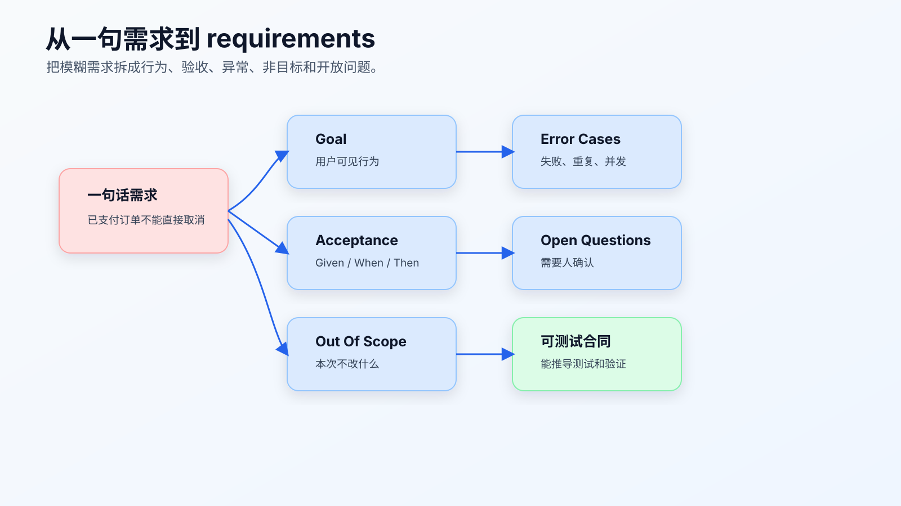
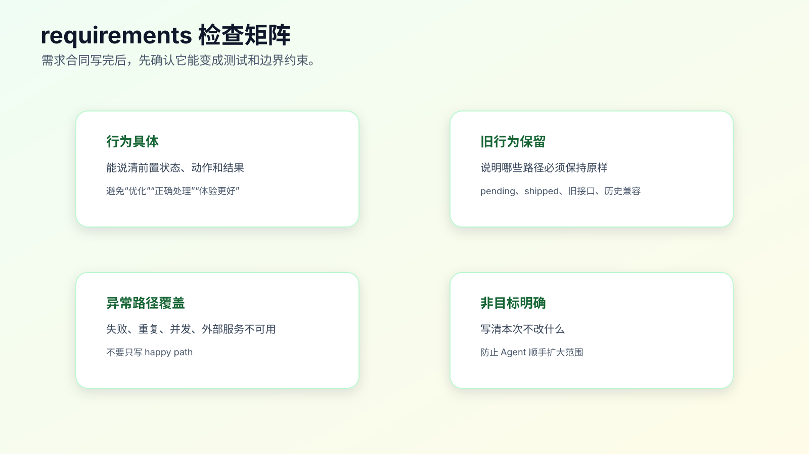

从一句需求到 requirements.md
复杂需求开始前，最不该省的是 requirements.md。
不是因为文档重要，而是因为需求如果没有变成可验证的行为合同，AI 会在实现过程中自己补空白。
一句话需求：
已支付订单不能直接取消，要走退款。
听起来清楚，其实不够。它没有说明 pending 订单怎么办，shipped 订单怎么办，退款失败怎么办，旧接口返回结构能不能变，管理后台是不是同一规则，历史订单是否迁移。
requirements.md 的目的，就是把这些隐含问题在写代码前摊开。

requirements.md 写什么，不写什么
requirements.md 写行为，不写实现。
它要回答：
- 谁在什么场景下触发。
- 系统应该表现出什么行为。
- 哪些旧行为必须保留。
- 哪些异常路径必须处理。
- 哪些内容不在本次范围。
- 怎么判断需求完成。
- 哪些问题还需要确认。
它不应该写：
- 改哪个函数。
- 新增哪个 if。
- 抽什么类。
- 用哪个数据库字段。
- 怎么拆 task。
这些属于 design.md 和 tasks.md。
把技术方案写进 requirements，容易让需求合同变形。后面如果实现方案变了，需求也跟着乱。
一个坏的 requirements 长什么样
坏版本：
# Requirements
已支付订单不能直接取消，要在 `cancelOrder` 里面判断 paid 状态，然后调用退款服务。
如果是 pending 就照旧，如果是 shipped 就报错。
这段话看起来很具体，但问题很多。
第一，它直接指定了实现位置和实现方式。
第二，它没有说明返回给用户的行为。
第三，它没有定义退款服务失败怎么办。
第四，它没有说明旧接口返回结构是否保持。
第五，它没有说明验收条件。
更好的版本：
# Requirements
## Goal
用户取消已支付订单时，系统不应直接取消订单，而应进入退款申请流程。
## Acceptance Criteria
- pending 订单取消后状态为 canceled。
- paid 订单取消后状态为 refund_requested。
- shipped 订单取消仍按现有规则拒绝。
- API response shape remains compatible with existing clients.
## Error Cases
- If refund request creation fails, order status must remain paid.
- User should receive a retryable error message.
## Out Of Scope
- Payment provider callback behavior.
- Historical order data migration.
- Admin batch cancellation.
## Open Questions
- Should paid order cancellation create refund request synchronously or asynchronously?
这才是需求合同。
从一句话需求拆成六块
一份可用的 requirements.md 通常包括六块。
Goal
Actors / Scenarios
Acceptance Criteria
Error Cases
Out Of Scope
Open Questions
不是每个需求都要六块都很长，但这六块能防止 Agent 漏掉关键边界。
Goal
Goal 写一句清楚的行为目标。
差：
优化订单取消。
好：
用户取消已支付订单时，系统进入退款申请流程，而不是直接取消订单。
Goal 不写技术方案。
Actors / Scenarios
写谁在什么场景下触发。
## Scenarios
- Buyer cancels a pending order before payment.
- Buyer cancels a paid order before shipping.
- Buyer cancels a shipped order.
- Support agent cancels an order from admin console.
如果不同角色规则不同，要写出来。否则 Agent 可能把用户端规则套到管理后台。
Acceptance Criteria
验收条件要可验证。
差：
- 订单取消逻辑正确。
好：
- Given a pending order, when user cancels, then status becomes canceled.
- Given a paid order, when user cancels, then status becomes refund_requested.
- Given a shipped order, when user cancels, then existing rejection behavior remains unchanged.
Given/When/Then 的价值不在格式，而在强迫你写出前置状态、动作和结果。
Error Cases
异常路径不能留给实现时猜。
## Error Cases
- If refund request creation fails, order status remains paid.
- If duplicate cancel request arrives, no duplicate refund request is created.
- If payment provider is unavailable, user receives retryable error.
很多线上 bug 都出在异常路径。AI 如果只看 happy path，会写出表面可用的实现。
Out Of Scope
非目标是 requirements.md 里最重要但最容易漏的部分。
## Out Of Scope
- Do not change payment provider callback logic.
- Do not migrate historical order data.
- Do not change admin batch cancellation.
- Do not change public API response shape.
非目标告诉 Agent 这次不改什么。没有它，AI 很容易“顺便”做大。
Open Questions
不确定的问题要显式列出来。
## Open Questions
- Should paid cancellation create refund request synchronously?
- Should support agents bypass the buyer-side restriction?
- What error copy should be shown when refund request creation fails?
Open Questions 的价值是暂停，而不是让 Agent 自己决定。
把现有行为和新行为分开写
生产需求里，最容易出问题的不是“新行为没实现”，而是旧行为被顺手改坏。
所以 requirements 里建议加一张行为表，尤其是状态机、权限、接口兼容类需求。
## Behavior Matrix
| Scenario | Current Behavior | Expected Behavior |
| --- | --- | --- |
| pending order cancel | status becomes `canceled` | unchanged |
| paid order cancel | status becomes `canceled` | status becomes `refund_requested` |
| shipped order cancel | rejected with `ORDER_ALREADY_SHIPPED` | unchanged |
| duplicate paid cancel | may create duplicate side effect | no duplicate refund request |
这张表对 Agent 很有用。它能明确哪些路径要改，哪些路径不能动。
它对 reviewer 也有用。review diff 时，不只看 paid 分支，还会看 pending、shipped 和 duplicate 路径有没有测试覆盖。
很多“AI 改坏旧逻辑”的问题，本质上是 requirements 没有把旧行为写成约束。Agent 看到新目标后，会自然围绕新目标重组代码。如果旧行为没有被写进合同，它就不一定知道哪些东西不能碰。
需求确认不是让产品补文档
个人 AI Coding 场景里，很多需求来自自己、同事、issue 或线上问题。你不一定有完整 PRD，也不应该为了写 requirements 去发起一轮重流程。
可执行的做法是：让 Agent 先根据现有材料生成草稿，然后你把不确定点发给相关人确认。
比如：
Need confirmation:
1. Paid cancellation should create refund request synchronously or asynchronously?
2. Support agent cancellation follows buyer-side rule or has override permission?
3. Existing mobile clients can display `refund_requested` or need fallback copy?
这三条比“请确认订单取消需求”有效得多。它们直接指向实现会分叉的地方。
如果没有产品或业务方可以确认，也要把决定写清楚：
Decision:
- For this change, buyer cancellation creates refund request synchronously.
- Support agent cancellation remains out of scope.
- Mobile fallback display will be handled in a separate change.
Reason:
- Current refund service already exposes synchronous create API.
- No admin batch cancellation requirement is confirmed.
这不是形式主义。它是在给未来的代码审查和线上问题留证据。
线上 bug 的 requirements 怎么写
很多程序员觉得只有新需求才需要 requirements，线上 bug 直接修就行。AI Coding 里，这个想法很容易出问题。
比如线上报警：
用户重复点击取消订单后，出现两条退款申请。
如果直接让 Agent 修，它可能只在按钮上加防重复点击，也可能只在接口里加锁，还可能改测试让它通过。真正需要先写清楚的是：重复请求在系统层面应该如何表现。
可以写成：
# Requirements: duplicate paid cancellation is idempotent
## Goal
When a buyer repeats paid order cancellation, the system must not create duplicate refund requests.
## Current Behavior
- Duplicate cancel requests may create multiple refund requests.
- Existing pending order cancellation is not part of this bug.
## Acceptance Criteria
- Given a paid order with no refund request, when buyer cancels once, then one refund request is created.
- Given a paid order with an existing refund request, when buyer cancels again, then no new refund request is created.
- Given a duplicate request, response shape remains compatible with existing clients.
## Error Cases
- If refund request lookup fails, order status remains unchanged.
## Out Of Scope
- Do not change UI button debounce in this fix.
- Do not change payment provider callback behavior.
- Do not migrate historical duplicate refund records.
这份 requirements 把修复范围限定在后端幂等行为。UI 防重复点击可以作为后续增强，但不能代替服务端幂等。
这就是 requirements 的价值：它先定义正确行为，再让 design 决定技术手段。
需求合同检查矩阵

写完 requirements.md 后，用四个维度检查。
第一，行为是否具体。
能不能从文字直接写出测试？如果不能，说明还太虚。
第二，旧行为是否保留。
新需求通常只改变一部分路径。哪些旧行为不变必须写出来。
第三，异常路径是否覆盖。
失败、重复、并发、权限、外部系统不可用，这些是否需要说明。
第四，非目标是否明确。
不在本次范围的东西，如果不写，Agent 可能当成优化空间。
让 AI 帮你写 requirements 草稿
AI 很适合把原始需求整理成 requirements 草稿，但不要让它直接写成最终合同。
可以这样提示：
先不要写代码。
请把下面需求整理成 requirements.md 草稿：
需求：
已支付订单不能直接取消，要走退款。
要求：
- 只写用户可见行为和业务验收条件。
- 不写技术实现方案。
- 使用 Goal / Scenarios / Acceptance Criteria / Error Cases / Out Of Scope / Open Questions。
- 不确定的地方写 Open Questions，不要自行决定。
然后你要审。
重点看：
- 是否把实现写进了 requirements。
- 是否遗漏旧行为。
- 是否把未确认规则写成确定事实。
- 是否缺异常路径。
- 是否缺非目标。
AI 可以生成草稿，但需求合同必须人确认。
一个完整 requirements 示例
下面是订单取消改退款的完整版本。
# Requirements: paid order cancellation enters refund flow
## Goal
When a buyer cancels a paid order before shipping, the system should create a refund request instead of directly canceling the order.
## Scenarios
- Buyer cancels a pending order before payment.
- Buyer cancels a paid order before shipping.
- Buyer cancels a shipped order.
- Buyer repeats a cancel request for the same paid order.
## Acceptance Criteria
- Given a pending order, when the buyer cancels it, then the order status becomes `canceled`.
- Given a paid order, when the buyer cancels it, then the order status becomes `refund_requested`.
- Given a shipped order, when the buyer cancels it, then the existing shipped-order rejection remains unchanged.
- Given a repeated cancel request for a paid order with an existing refund request, then no duplicate refund request is created.
- Existing API response shape remains compatible with current clients.
## Error Cases
- If refund request creation fails, the order status remains `paid`.
- If payment provider is temporarily unavailable, the user receives a retryable error.
## Out Of Scope
- Payment provider callback handling.
- Historical order data migration.
- Admin batch cancellation.
- Changing public API response shape.
## Open Questions
- Should refund request creation be synchronous or asynchronous?
- What user-facing copy should appear when refund request creation fails?
- Should support agents follow the same rule as buyers?
这份 requirements 没有说改哪个函数。它只定义行为。
requirements 通过后，design.md 才有明确输入：根据当前代码结构决定在哪里实现、如何保持兼容、风险在哪里。
验收条件怎么写得可测试
验收条件写得好不好，看它能不能变成测试。
差：
- 系统应该正确处理已支付订单。
这句话没法直接测试。
好：
- Given a paid order, when the buyer cancels it, then the order status becomes `refund_requested`.
它能直接变成测试用例：
setup paid order
call cancel
assert status refund_requested
再比如：
- Given refund request creation fails, when buyer cancels a paid order, then order status remains `paid`.
这能直接变成失败注入测试。
如果一个验收条件不能变成测试、截图、接口调用或人工检查步骤，它就还不够清楚。
非目标怎么写
非目标不要写成“暂不考虑性能”这种空话。
要写具体边界：
## Out Of Scope
- Do not change payment provider callback behavior.
- Do not change admin batch cancellation.
- Do not migrate historical order data.
- Do not change public API response shape.
非目标有两个作用。
第一，它保护现有系统。 第二，它让 tasks 可以拆得更小。
如果非目标没写，Agent 很可能把“支付回调也顺便改一下”当成合理方案。
Open Questions 不要怕多
Open Questions 是好东西。
它说明你没有把不确定性伪装成确定结论。
比如：
## Open Questions
- Refund request creation should be sync or async?
- Should support agents follow buyer-side cancel restriction?
- What happens when refund provider returns a duplicate request error?
如果这些问题影响实现，就先确认；如果不影响第一步，可以写进 design 的风险和 tasks 的后续项。
AI Coding 里，真正危险的是没有 Open Questions。那通常意味着 Agent 自己在替你做业务决定。
requirements 和测试的关系
requirements.md 不是测试文件，但它应该天然能推导出测试。
可以在 requirements 末尾加一段：
## Verification Ideas
- Unit test: pending order cancel remains canceled.
- Unit test: paid order cancel creates refund_requested.
- Unit test: shipped order cancel remains rejected.
- Unit test: duplicate paid cancel does not create duplicate refund request.
- API compatibility check: response shape unchanged.
这不是 tasks.md，只是提示后续测试方向。
真正的测试命令和实现顺序放到 tasks。
让 Agent 生成 requirements 时，要给它证据边界
不要只说“帮我写 requirements”。这会让 Agent 按常识补业务规则。
更合适的输入是：
请生成 requirements.md 草稿，不要写代码。
可用证据：
- 用户需求：已支付订单不能直接取消，要走退款。
- 当前代码：请先搜索订单取消入口、订单状态枚举、相关测试。
- 只能把源码、测试和需求中能确认的内容写成事实。
- 不确定的业务规则写进 Open Questions。
输出要求：
- 每条 Current Behavior 带文件路径。
- Acceptance Criteria 使用 Given/When/Then。
- Out Of Scope 写清不能改的模块和行为。
这里的关键不是模板，而是证据边界。
Agent 可以搜索代码，可以读取测试，可以根据需求生成候选验收条件。但它不能把“常见电商系统通常怎么做”写成你项目的事实。
审草稿时，重点看两类句子。
第一类是没有来源的确定句：
Refund request should be created asynchronously.
如果原始需求和源码都没支持这个结论，它应该改成 Open Question。
第二类是过度抽象句：
System should improve cancellation experience.
这句话不能测试，应该改成状态、响应、页面行为或错误码。
requirements 通过前，不要进入 design
有些需求看起来急，容易直接跳到设计。但 requirements 没过，design 越详细越危险。
进入 design 前，至少确认这些问题：
新行为是否能写成测试？
旧行为是否写进合同？
异常路径是否有期望结果？
非目标是否具体到模块、接口或行为？
Open Questions 里是否还有会影响实现路径的问题？
如果还有会影响实现的问题，比如“退款同步还是异步”“后台是否同规则”“新增状态老客户端能否识别”，就不要让 Agent 设计方案。
可以先做两件事：
- 让 Agent 搜索现有代码，补齐 Current Behavior。
- 把业务决策问题发给人确认。
这比让 Agent 在 design 里自作主张要便宜得多。
PR 里怎么呈现 requirements
requirements 不一定要完整贴进 PR 描述，但 PR 需要能追溯到它。
可以这样写：
Requirement summary:
- paid order cancellation now enters refund flow
- pending and shipped cancellation behavior unchanged
- response shape unchanged
Spec:
- `docs/specs/order-cancel-refund/requirements.md`
Verification mapped from requirements:
- pending cancel regression test
- paid cancel refund_requested test
- shipped cancel existing error test
- duplicate paid cancel idempotency test
reviewer 不需要读很长的需求文档，也能知道这次行为合同是什么。
对 AI Coding 来说，这一步还有另一个价值：后续让 Agent 做 code review 或补测试时，它可以直接拿 PR 描述和 requirements 对照，而不是重新猜需求。
状态值、错误码和字段名要引用真实系统
requirements 写行为，但并不意味着它可以随便命名状态和错误码。
如果当前系统里订单状态叫 PAID、CANCELLED，你在 requirements 里写 paid、canceled 只是示意没有问题；但进入真实任务时，状态值必须和代码、接口或数据库一致。
可以要求 Agent 先查这些材料：
请先搜索：
- order status enum
- cancel related error codes
- public API response schema
- existing order cancel tests
输出 requirements 草稿时：
- 业务描述用自然语言。
- 状态值、错误码、字段名使用源码里的真实名字。
- 找不到的名字不要发明，写到 Open Questions。
这能避免一个很隐蔽的问题：requirements 看起来对，但实现时 Agent 为了匹配文档新增了一套不该存在的命名。
比如系统里已有错误码：
ORDER_ALREADY_SHIPPED
ORDER_CANCEL_NOT_ALLOWED
requirements 就不要写成：
- shipped order returns `SHIPPED_ORDER_ERROR`.
应该写：
- shipped order still returns existing `ORDER_ALREADY_SHIPPED` error.
这句话同时表达了两个约束：错误码真实存在，并且本次不改。
需求质量不够时，Agent 会怎么误解
看一个更贴近真实工作的例子：
把会员到期提醒做一下，别让用户错过续费。
这句话如果直接交给 Agent，至少会出现这些分叉：
- 到期前几天提醒？
- 站内信、短信、邮件、App push 哪些渠道？
- 免费会员、付费会员、企业会员是否一样？
- 已取消自动续费的用户是否提醒？
- 多次提醒是否去重？
- 发送失败是否重试？
- 法务和隐私策略是否允许发送？
如果 requirements 只写“用户到期前收到提醒”，实现就会非常随意。
更合适的写法是先把范围压住：
## Goal
Paid individual members should receive one in-app reminder 7 days before membership expiration.
## Acceptance Criteria
- Given a paid individual member expires in 7 days, when daily reminder job runs, then one in-app reminder is created.
- Given reminder already exists for the same expiration cycle, when job runs again, then no duplicate reminder is created.
- Given enterprise member, when job runs, then no reminder is created in this change.
## Out Of Scope
- SMS, email, and push notifications.
- Enterprise membership reminder.
- Auto-renew payment retry.
- Marketing campaign copy.
这段 requirements 没有解决所有续费问题，但它把这次变更定义清楚了。Agent 可以围绕“个人付费会员、站内信、7 天、一次、去重”去搜索和实现。
程序员写 requirements，不是为了把需求说得宏大，而是把这次要改的行为压到可执行范围。
常见错误
错误一：把技术实现写进需求。
需求写行为，技术方案写 design。
错误二：只有 happy path。
复杂需求必须写 error cases。尤其是外部系统失败、重复请求、并发和权限。
错误三：没有非目标。
非目标不写，Agent 容易扩大范围。
错误四：验收条件不可测试。
“体验更好”“逻辑正确”都不可测试。改成状态、响应、页面行为或命令结果。
错误五：把不确定问题写成确定规则。
不确定就写 Open Questions，先确认。
常见问题
requirements 要不要写中文还是英文？
看团队习惯。代码标识、状态值、错误码、命令保留英文；业务描述用中文也可以。关键是可测试、可追溯，不是语言选择。
如果需求来自线上 bug，requirements 还要写吗？
要写，但可以短。线上 bug 也需要定义“修复后应该是什么行为”“哪些旧行为不能变”“怎么证明没复发”。否则很容易只修当前报错路径。
验收条件是不是越多越好？
不是。验收条件要覆盖会改变结果的路径。重复写同一类场景会增加噪音。优先写状态分支、权限分支、异常路径、兼容性分支。
Open Questions 会不会显得需求没想清楚？
不会。Open Questions 是把不确定性显式暴露。真正危险的是没确认就让 Agent 默认选择一个实现。
requirements 变了，后面的 design 和 tasks 怎么办？
需要同步更新。尤其是 Acceptance Criteria、Out Of Scope、Error Cases 变化时，design 的方案和 tasks 的验证命令都可能要重拆。
可以直接复用的模板
# Requirements: <change name>
## Goal
<One sentence describing the behavior change.>
## Scenarios
- <Actor + situation>
## Acceptance Criteria
- Given <state>, when <action>, then <observable result>.
## Error Cases
- If <failure>, then <expected behavior>.
## Out Of Scope
- <What this change must not touch.>
## Open Questions
- <Question that needs human confirmation.>
## Verification Ideas
- <Test, command, screenshot, API call, or manual check idea.>
第一次写不要追求完美。先写出 Goal、Acceptance Criteria、Out Of Scope。复杂需求再补 Error Cases 和 Open Questions。
迁移建议
下次遇到一句模糊需求，先不要让 AI 改代码。让它生成 requirements.md 草稿，然后你只审三件事：
- 行为是否可测试。
- 旧行为是否保留。
- 非目标是否明确。
如果这三件事过不了，就不要进入 design。
requirements.md 写清后，design.md 才有基础。需求合同只定义要什么，设计文档要回答怎么在当前代码库里改，怎么控制兼容性、数据流、架构边界和验证风险。
还有一种情况要直接拒绝继续：需求本身要求绕过现有安全、权限、审计或合规边界，但没有明确授权。
比如：
临时让所有客服都能取消已支付订单，先上线再说。
这不能直接写成 Acceptance Criteria。至少要先确认：
- 哪些角色可以取消。
- 是否需要操作日志。
- 是否影响退款审批。
- 是否需要灰度或开关。
- 现有权限测试是否要保留。
AI Coding 的速度越快，越不能把权限和审计当成实现细节。requirements 阶段发现这类问题，就应该停在 Open Questions，而不是让 design 替业务和安全决策背书。
可复查资料
- GitHub Spec Kit 官方文档：https://github.github.com/spec-kit/
- GitHub Spec Kit 仓库：https://github.com/github/spec-kit
- GitHub Blog: Spec-driven development with AI：https://github.blog/ai-and-ml/generative-ai/spec-driven-development-with-ai-get-started-with-a-new-open-source-toolkit/
- OpenSpec 官方站：https://openspec.dev/